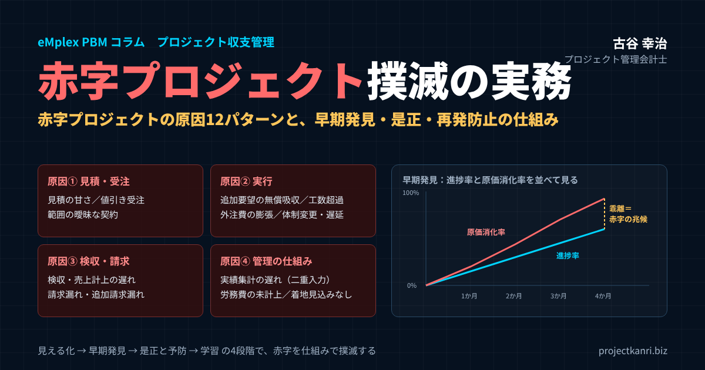

赤字プロジェクト撲滅の実務―赤字プロジェクトの原因12パターンと、早期発見・是正・再発防止の仕組みづくり

結論：赤字プロジェクトは「原因の構造」を断てば撲滅できます
この記事の要点
- 赤字プロジェクトの3タイプ：受注時赤字／途中赤字化／隠れ赤字（労務費が原価に入っていない）
- 赤字プロジェクトの原因：見積・実行・請求・管理の4領域に、12のパターン
- 早期発見：進捗率と原価消化率、着地見込み（EAC）の粗利率、その推移を毎月見る
- 初動：粗利率アラートの閾値を決め、原因別の是正アクションを速く打つ
- 撲滅の仕組み：①受注前の見積レビュー ②進行中の着地更新と変更管理 ③出口の請求確認と振り返り ④二重入力をなくすデータ基盤
プロジェクト管理会計士の古谷です。プロジェクト型ビジネスの経営者や管理部門の方から、最も多くいただく相談の一つが、赤字プロジェクトをどうすればなくせるのか、というものです。結論から申し上げます。赤字プロジェクトは、運や個人の能力の問題ではありません。見積、実行、請求、そして管理の仕組みのどこかにある「原因の構造」から生まれます。その構造を一つずつ断っていけば、赤字プロジェクトは確実に減らすことができ、撲滅に近づけることができます。
赤字プロジェクトの多くは、ある日突然、赤字になるわけではありません。受注の時点ですでに無理のある見積だった。進行中に追加の要望を無償で引き受け続けた。原価の実績が集まるのが遅く、気づいたときには取り返しがつかなかった。いずれも、少しずつ進行していた赤字に、最後に気づいただけなのです。だからこそ、原因を知り、兆候を早くつかみ、手を打つ仕組みを持つことが、赤字プロジェクト撲滅の唯一の道です。
私は、新卒で入った朋友建設で、工事ごとの採算が見えないまま会社が和議に至る過程を経験しました。エンプレックス（現SCSK）でCFOを務めていたときには、システム開発のプロジェクトの赤字をいかに早く見つけ、手を打つかに取り組みました。そして独立後、200社を超えるプロジェクト型企業の経営管理を支援してきました。その経験から言えるのは、赤字プロジェクトの原因は、業種や会社の規模が違っても、驚くほど共通しているということです。
本稿では、赤字プロジェクトの原因を12のパターンに整理したうえで、無形サービス業で赤字が見えにくくなる理由、早期発見のための指標と閾値、赤字が見えたときの初動、そして受注前から完了後までを通じて赤字プロジェクトを撲滅する仕組みづくりを、順を追ってお伝えします。
赤字プロジェクトとは：3つのタイプを区別する
最初に、赤字プロジェクトという言葉の意味を整理しておきます。一口に赤字プロジェクトと言っても、その生まれ方によって、大きく三つのタイプに分けられます。タイプによって原因も対策も異なるため、まずは自社の赤字プロジェクトがどのタイプなのかを見極めることが大切です。
| タイプ | 生まれ方 | 主な原因 |
|---|---|---|
| 受注時赤字 | 受注した時点で赤字が見込まれる | 見積の甘さ、値引き受注 |
| 途中赤字化 | 受注時は黒字の見込みが、進行中に赤字へ | 追加要望の無償吸収、工数超過、外注費の膨張 |
| 隠れ赤字 | 帳簿上は黒字だが、実態は赤字 | 労務費がプロジェクト原価に計上されていない |
一つ目は、受注した時点ですでに赤字が見込まれている「受注時赤字」です。戦略的に赤字を承知で受注する場合もありますが、多くは、見積の段階で原価を甘く見積もったか、受注を優先して大きく値引きしたことが原因です。
二つ目は、受注時には利益が見込まれていたのに、進行中に赤字に転落する「途中赤字化」です。仕様の変更、追加作業の無償対応、工数の超過、外注費の増加などが積み重なって生まれます。赤字プロジェクトの中で最も多いのが、このタイプです。
三つ目は、帳簿の上では黒字に見えるのに、実態は赤字になっている「隠れ赤字」です。社員の人件費、つまり労務費がプロジェクトの原価に正しく計上されていない会社では、外注費や経費だけを原価として粗利を計算するため、粗利が実態よりも良く見えます。社員が大量の時間を費やしたプロジェクトでも、帳簿の上では黒字になってしまうのです。無形サービス業では、この隠れ赤字が、最も見落とされやすく、最も危険なタイプです。
赤字プロジェクト撲滅の取り組みは、まず、この三つのタイプをすべて見えるようにすることから始まります。特に隠れ赤字は、労務費を原価に入れる仕組みがなければ、存在すら認識できません。自社の赤字プロジェクトの件数を数えるときには、労務費を含めた本当の原価で計算しているかどうかを、必ず確認してください。
赤字プロジェクトが会社に与える、本当の損失
赤字プロジェクトの損失は、そのプロジェクトの赤字の金額だけではありません。会社全体で見ると、損失はそれよりはるかに大きくなります。
たとえば、粗利率が30％の会社で、100万円の赤字のプロジェクトが一つ生まれたとします。この100万円を、他のプロジェクトの粗利で取り戻すには、粗利率30％のプロジェクトで約333万円の売上が必要になります。一つの赤字プロジェクトが、別のプロジェクト数件分の利益を、丸ごと飲み込んでしまうのです。
| 会社の平均粗利率 | 取り戻すのに必要な売上 |
|---|---|
| 20％ | 500万円 |
| 30％ | 約333万円 |
| 40％ | 250万円 |
※赤字額÷粗利率で計算。数値は説明のための例です。
さらに、赤字プロジェクトには、数字に表れにくい損失もあります。赤字を取り戻そうとして、プロジェクトのメンバーが長時間の労働を強いられ、疲弊していく。その間、優秀なメンバーが他のプロジェクトに関われず、新しい受注の機会を逃す。顧客との関係がこじれ、次の取引につながらない。赤字のプロジェクトほど、経営者やマネージャーの時間と注意を奪い、会社全体の動きを鈍らせます。
だからこそ、赤字プロジェクトの撲滅は、個々のプロジェクトの採算の問題ではなく、会社の経営そのものの問題として取り組む必要があるのです。
赤字プロジェクトの原因12パターン：見積・実行・請求・管理の4領域
では、赤字プロジェクトの原因には、どのようなものがあるのでしょうか。私が支援の現場で見てきた原因を整理すると、見積・受注の段階、実行の段階、検収・請求の段階、そして管理の仕組みという四つの領域に、合わせて12のパターンとしてまとめることができます。
| 領域 | 原因 | 典型的な状況 |
|---|---|---|
| 見積・受注 | 1 見積の甘さ | 工数・難易度・管理工数を少なく見積もる |
| 見積・受注 | 2 値引き受注 | 粗利への影響を確認せずに価格を下げる |
| 見積・受注 | 3 範囲の曖昧な契約 | 追加の範囲・修正回数・前提条件が書かれていない |
| 実行 | 4 追加要望の無償吸収 | 「ついでに」の対応が請求されずに積み上がる |
| 実行 | 5 工数の超過 | 難易度の見誤り、手戻り、単価の高い人の担当 |
| 実行 | 6 外注費の膨張 | 発注範囲が曖昧なまま着手し追加発注が重なる |
| 実行 | 7 体制変更・スケジュール遅延 | 中心メンバーの離脱、顧客都合の停止 |
| 検収・請求 | 8 検収・売上計上の遅れ | 手直し対応の原価が続き、売上は後ろにずれる |
| 検収・請求 | 9 請求漏れ・追加請求漏れ | 追加作業や立替経費を請求し忘れる |
| 管理の仕組み | 10 実績集計の遅れ | データの分散と二重入力で、収支が翌月半ばまで分からない |
| 管理の仕組み | 11 労務費の原価未計上 | 社員の時間が原価に入らず、隠れ赤字が見えない |
| 管理の仕組み | 12 着地見込みがない | 実績しか見ず、終わってみないと赤字が分からない |
この表を見ていただくと分かるとおり、赤字プロジェクトの原因は、プロジェクトの現場だけにあるわけではありません。見積を作る営業、請求を担う管理部門、そしてデータを集める仕組みそのものにも、原因が潜んでいます。赤字プロジェクトの撲滅を、プロジェクトマネージャー個人の努力に任せていては、うまくいかない理由がここにあります。以下、領域ごとに原因を詳しく見ていきます。
赤字プロジェクトの原因①：見積・受注の段階
一つ目の領域は、見積と受注の段階です。ここでの原因は、プロジェクトが始まる前から、赤字の種をまいてしまいます。
原因1は、見積の甘さです。必要な工数を少なく見積もる、難易度の高い作業を軽く見る、プロジェクトの管理や顧客との調整にかかる時間を見積に含めていない。見積を作る担当者の経験に頼り、過去のプロジェクトの実績と照らし合わせる仕組みがない会社では、同じ見積の誤りが繰り返されます。
原因2は、値引き受注です。競合との競争や、顧客との関係を優先して、原価を割り込むような価格で受注してしまう。値引き自体が悪いわけではありませんが、値引きによって粗利がどれだけ削られるのかを、数字で確認しないまま判断していることが問題です。受注の判断の場に、見積の原価と粗利率が示されていなければ、値引きは歯止めなく進みます。
原因3は、範囲の曖昧な契約です。どこまでが見積の範囲で、どこからが追加になるのか。修正は何回まで含まれるのか。顧客の側で何をいつまでに用意してもらうのか。こうした前提が契約や見積書に書かれていないと、後から生じる追加の要望を、追加の請求として扱う根拠がなくなります。範囲の曖昧さは、次の段階で生まれる赤字の、最大の温床です。
見積・受注の段階の原因は、受注時赤字を生むだけでなく、途中赤字化の下地をつくります。プロジェクトが始まってからどれほど頑張っても、入口で生まれた赤字の種を取り除くことは困難です。赤字プロジェクト撲滅の第一歩は、入口の段階で、見積と契約の質を上げることなのです。
見積の段階では、プロジェクトの管理そのものにかかる工数も忘れてはいけません。顧客との打ち合わせ、進捗の報告、社内の調整、品質の確認。こうした管理の工数は、作業の工数に比べて見積から漏れやすく、規模の大きいプロジェクトほど、全体の工数に占める割合が大きくなります。
赤字プロジェクトの原因②：実行の段階
二つ目の領域は、プロジェクトの実行の段階です。途中赤字化の原因の多くは、ここにあります。
原因4は、仕様の変更や追加の要望の無償吸収です。プロジェクトが進むにつれて、顧客からは「ついでにこれも」「やはりここを変えたい」という要望が出てきます。担当者は、顧客との関係を大切にするあまり、それを追加の請求なしに引き受けてしまう。一つひとつは小さな対応でも、積み重なれば、プロジェクトの粗利を大きく削ります。そして多くの場合、その工数は通常の作業と区別されずに記録されるため、後から振り返っても、どれだけの工数が無償の対応に使われたのかが分かりません。
原因5は、工数の超過です。作業の難易度を見誤った、手戻りが多発した、メンバーのスキルが想定に届かなかった、あるいは予定より単価の高いメンバーが作業を担当した。原因はさまざまですが、無形サービス業では、原価の大部分が人の時間であるため、工数の超過がそのまま赤字に直結します。
原因6は、外注費の膨張です。外部の協力会社や専門家に作業を依頼する際、発注の範囲が曖昧なまま着手すると、途中で範囲が広がり、追加の発注が重なります。外注費は、社内の工数よりも金額として見えやすい一方で、発注の承認が現場任せになっている会社では、気づいたときには予算を大きく超えていることがあります。
原因7は、体制の変更とスケジュールの遅延です。中心メンバーが別の案件に引き抜かれた、退職した、あるいは顧客の都合で作業が止まった。体制が変わると、引き継ぎや立ち上げ直しに工数がかかります。スケジュールが延びれば、その期間の人件費は確実に積み上がります。期間が延びて売上は変わらないのに、原価だけが増えていく。これも、途中赤字化の典型です。
実行の段階の原因に共通しているのは、どれも「その場では小さく見える」ことです。追加の要望一つ、手戻り一回、外注の追加発注一件。一つひとつは、プロジェクト全体から見れば小さな変化です。しかし、それが記録されず、積み上がっていく様子が見えないために、気づいたときには大きな赤字になっています。小さな変化を記録し、積み上がりを数字で見える状態にすることが、実行の段階の赤字を防ぐ鍵です。
赤字プロジェクトの原因③：検収・請求の段階
三つ目の領域は、検収と請求の段階です。見落とされがちですが、プロジェクトの終盤や完了後にも、赤字の原因は潜んでいます。
原因8は、検収と売上の計上の遅れです。顧客の検収が遅れれば、売上の計上も遅れます。その間も、手直しや確認の対応で原価は発生し続けます。また、売上の計上が予定の月から後ろにずれれば、月次の業績も、資金繰りも狂います。プロジェクト単体では赤字でなくても、期をまたいで売上がずれ込めば、会社の業績の見通しに大きな影響が出ます。
原因9は、請求漏れと追加請求の漏れです。契約の範囲内の請求は行っていても、追加で対応した作業や、立て替えた経費の請求を忘れている。複数のシステムやエクセルに情報が分散している会社では、どの作業が請求済みで、どの作業が未請求なのかを、確実に把握することが難しくなります。本来なら黒字だったはずのプロジェクトが、請求の漏れによって赤字になることは、決して珍しくありません。
検収・請求の段階の原因は、プロジェクトの現場ではなく、管理部門の業務の中にあることが多いものです。請求の漏れを防ぐには、プロジェクトの実績と請求のデータが、同じプロジェクトのコードでつながっていて、未請求の作業がすぐに分かる状態をつくる必要があります。
赤字プロジェクトの原因④：管理の仕組み
四つ目の領域は、管理の仕組みそのものです。ここでの原因は、個々のプロジェクトの赤字を直接生むわけではありませんが、赤字に気づくのを遅らせ、手を打つ機会を奪います。私は、この領域こそが、赤字プロジェクトが撲滅できない根本の原因だと考えています。
原因10は、実績の集計の遅れです。工数は勤怠やタイムシートのシステム、外注費は購買や会計のシステム、経費は経費精算のシステム、売上は販売管理やエクセル。データがばらばらに存在し、それをプロジェクトごとに集計するには、担当者が手作業で突き合わせ、同じデータを何度も入力し直さなければならない。この二重入力と手作業の集計が、月次の締めを遅らせ、プロジェクトの収支が分かるのは翌月の半ば以降、という状態を生みます。そのときには、すでに次の月の原価が積み上がっています。
原因11は、労務費がプロジェクトの原価に入っていないことです。先ほど述べた隠れ赤字の原因です。社員の人件費を販売費及び一般管理費として一括で処理し、プロジェクトの原価には外注費と経費しか含めていない。この状態では、社員が時間をかけたプロジェクトほど、実態よりも粗利が良く見えます。どのプロジェクトが本当に赤字なのかを、そもそも判断することができません。
原因12は、着地の見込みがないことです。予算と実績を比べる仕組みはあっても、プロジェクトが最終的にいくらの原価で終わるのか、その見込みを更新する仕組みがない。実績だけを見ていると、プロジェクトの前半では予算の範囲内に収まっているように見えても、残りの作業を考えれば大幅な赤字になることが、終盤まで分かりません。「終わってみないと分からない」状態のままでは、赤字に手を打つことはできないのです。
管理の仕組みに原因がある会社では、プロジェクトマネージャーがどれほど優秀でも、赤字プロジェクトはなくなりません。数字が遅く、不正確で、先が見えない状態では、正しい判断ができないからです。赤字プロジェクトの撲滅には、現場の努力と同時に、正確な数字が速く集まり、先が見える仕組みが欠かせません。
管理の仕組みの問題は、経理担当者の過大な負担という形でも表れます。月末から月初にかけて、分散したデータの突き合わせと集計に追われ、本来の分析や改善の仕事に手が回らない。その結果、月次の決算が遅れ、経営は古い数字で判断をせざるを得ない。この悪循環を断ち切ることが、赤字プロジェクト撲滅と、経理業務の効率化の両方につながります。
無形サービス業で、赤字プロジェクトが見えにくい理由
ここまでの原因は、どのプロジェクト型ビジネスにも共通するものですが、とりわけ無形サービス業では、赤字プロジェクトが見えにくくなります。広告、イベント、リサーチ、販促支援、広報・PR、アニメや映像の制作、コンテンツ制作、システムの受託開発、ソフトウェア開発、ウェブ制作、ITインフラの構築・保守、コンサルティング、士業、BPO。形のないサービスを、プロジェクト単位で提供するこれらの業種には、共通する特徴があります。
第一に、原価の大部分が人の時間であることです。製造業のように、材料費や部品の在庫として原価が目に見える形で残ることはありません。人の時間は、記録しなければ、どのプロジェクトにどれだけ使われたのかが分からなくなります。
第二に、プロジェクトごとに売上と原価が大きく変動することです。同じような案件でも、顧客の要望や進め方によって、かかる時間は大きく違います。過去の平均で見積もっても、個々のプロジェクトの採算は大きくぶれます。
第三に、外注先や協力会社を多く使うことです。広告やイベント、映像制作では、制作会社、出演者、会場、機材など、多くの外部の取引先が関わります。外注費の発注と支払が、プロジェクトのコードと結び付いて管理されていなければ、プロジェクトの原価は正確に集まりません。
第四に、管理の仕組みが事業の成長に追いついていないことです。ここ十数年で急速に成長した無形サービス業の会社では、創業期のエクセルや、部門ごとに導入したシステムをそのまま使い続け、データがばらばらになっていることが少なくありません。案件ごとの収支を確認しようとしても、分散したデータを紐づけることすらままならない。これが、赤字プロジェクトが見えない最大の理由です。
| 業種 | 赤字の原因になりやすい点 |
|---|---|
| 広告代理・広告制作・販促支援 | 修正の繰り返し、媒体費・制作外注費の管理、追加請求の漏れ |
| イベント・広報・PR | 会場・機材・人員の直前の追加手配、当日対応の工数 |
| アニメ・映像・コンテンツ制作 | リテイク（やり直し）、制作期間の延長、外部スタッフ費 |
| システム受託・ソフトウェア・WEB制作 | 仕様変更の無償対応、テスト工程の膨張、見積の甘さ |
| ITインフラ構築・保守 | 保守範囲外の対応、障害対応の工数 |
| コンサルティング・士業・リサーチ | 範囲の拡大、提案段階の工数、報告書の作り直し |
| BPO・各種代行サービス | 想定を超える処理量、例外対応の工数 |
※筆者の支援経験にもとづく整理です。
この表のとおり、業種によって赤字の原因になりやすい点は異なりますが、根底にある構造は共通しています。人の時間と外注費という、形に残らない原価を、プロジェクトごとに正確に集め、先を見通す仕組みがあるかどうか。それが、無形サービス業で赤字プロジェクトを撲滅できるかどうかの分かれ目です。
赤字プロジェクトを早期発見する5つの指標
原因が分かったら、次は、赤字の兆候をできるだけ早くつかむための指標です。赤字プロジェクトの撲滅で最も大切なのは、赤字が確定する前に、その兆候に気づくことです。私が支援先で重視している指標は、次の五つです。
| 指標 | 見方 | 兆候の例 |
|---|---|---|
| ① 進捗率と原価消化率 | 作業の進み具合と、原価予算の使い具合を比べる | 原価消化率が進捗率を上回り、差が開き続ける |
| ② 着地見込みの粗利率 | 実績＋残作業の見込み＝完了時原価（EAC）から粗利率を予測 | 予算の粗利率から大きく低下 |
| ③ 着地見込みの推移 | 毎月の見込みを並べる | 見込みが毎月少しずつ悪化 |
| ④ 原価構成の変化 | 外注費・経費・追加作業の工数を項目別に見る | 予定にない項目が急増 |
| ⑤ 売上計上の見込み | 検収・請求の予定と未請求の作業 | 売上の月が後ろにずれる、未請求が残る |
一つ目は、進捗率と原価消化率の比較です。プロジェクトの作業がどれだけ進んだかを表す進捗率と、原価の予算をどれだけ使ったかを表す原価消化率を並べて見ます。原価消化率が進捗率を上回っていれば、このままでは予算を超えるペースで原価が使われているということです。この差が開き続けているプロジェクトは、赤字化の最も分かりやすい兆候を示しています。
二つ目は、着地見込みの粗利率です。これまでの原価の実績に、完了までの残作業の原価の見込みを加えた、完了時の原価の見込みを計算し、それをもとに最終的な粗利率を予測します。英語ではEAC（Estimate at Completion）と呼ばれる考え方です。予算の粗利率と比べて、着地見込みの粗利率がどれだけ下がっているかを見ます。
三つ目は、着地見込みの推移です。着地見込みは、毎月更新します。その推移を並べて見ると、見込みが毎月少しずつ悪化しているプロジェクトが分かります。こうしたプロジェクトは、現場が問題を小出しにしている可能性があり、根本の原因に手が打たれていないことが多いものです。
四つ目は、原価の構成の変化です。外注費や経費、追加作業の工数など、予定にない項目が急に増えていないかを確認します。特に、追加作業の工数を通常の作業と区別して記録していれば、無償対応が積み上がっていく様子を、数字で捉えることができます。
五つ目は、売上の計上の見込みの変化です。検収や請求の予定が後ろにずれていないか、未請求の作業が残っていないかを確認します。売上の時期がずれると、プロジェクトの採算だけでなく、会社全体の業績と資金繰りの見通しにも影響します。
これらの指標は、一度に全部をそろえる必要はありません。まずは、進捗率と原価消化率の比較と、着地見込みの粗利率の二つから始めてください。この二つが毎月見えるだけで、赤字プロジェクトの多くは、手を打てる段階で発見できるようになります。
指標を見るときは、一つの指標だけで判断しないことも大切です。進捗率と原価消化率の差が開いていても、前半に原価が集中する性質のプロジェクトであれば、問題がない場合もあります。複数の指標を組み合わせ、プロジェクトの性質を踏まえて読み解くことで、誤った警告に振り回されずに済みます。
粗利率アラートの閾値を決め、「見るべき案件」を絞る
指標を見る仕組みができても、すべてのプロジェクトを毎月細かく見るのは大変です。プロジェクトの数が多い会社ほど、見るべき案件を絞り込む工夫が必要になります。そこで役に立つのが、閾値を決めて、それを超えたプロジェクトだけを自動的に拾い上げる、粗利率アラートの仕組みです。
| 信号 | 基準の例 | 対応 |
|---|---|---|
| 緑 | 着地見込みの粗利率が予算どおり | 通常の月次確認 |
| 黄 | 着地見込みの粗利率が予算から5ポイント以上低下 | PMが1週間以内に原因を確認し報告 |
| 赤 | 10ポイント以上低下、または会社の最低粗利率を下回る | 事業部長を交えて是正方針を決定 |
| 即時対応 | 着地見込みの粗利がマイナス | 経営に即時報告、受注損失引当金の検討 |
※数値は一つの例です。自社の平均粗利率や業種の特性に合わせて設定してください。
たとえば、着地見込みの粗利率が予算から一定の幅以上下がったら黄色、さらに大きく下がるか、会社として最低限確保すべき粗利率を下回ったら赤、着地見込みがマイナスになったら即時対応、というように、段階を決めておきます。閾値は、会社の平均的な粗利率や、業種の特性に合わせて決めます。表の数値はあくまで一つの例ですので、自社のデータを見ながら調整してください。
閾値を決めておくことの利点は、判断が属人的にならないことです。「このプロジェクトは少し心配だ」という感覚ではなく、「黄色の基準を超えたから、今週中に原因を確認する」というように、誰が見ても同じ判断ができます。そして、基準を超えたプロジェクトだけを経営会議やプロジェクトの定例で取り上げれば、限られた時間を、本当に手を打つべき案件に集中させることができます。
もう一つ大切なのは、アラートが出たときに、誰が、いつまでに、何をするのかを決めておくことです。アラートが出ても、誰も動かなければ意味がありません。黄色ならプロジェクトマネージャーが原因を確認して報告する、赤なら事業部長を交えて是正の方針を決める、といったルールを、アラートの仕組みとセットで定めてください。
アラートの閾値は、運用しながら見直していくものです。最初は厳しめに設定し、アラートが多すぎて対応しきれないようなら、少し緩める。逆に、アラートが出なかったのに赤字になったプロジェクトがあれば、閾値や指標を見直す。数か月運用すれば、自社に合った基準が見えてきます。
赤字が見えたときの初動：原因別の是正アクション
赤字の兆候が見えたとき、最も大切なのは初動の速さです。兆候に気づいてから手を打つまでの時間が長いほど、打てる手は少なくなります。そして、打つ手は、原因によって変わります。
| 兆候・原因 | 是正アクションの例 |
|---|---|
| 追加要望の無償対応 | 契約範囲を確認し追加見積を提示。以後は見積・合意を経て着手 |
| 工数の超過 | 残作業の範囲・進め方・体制を見直し、手戻りの原因を除く |
| 外注費の増加 | 発注範囲を文書で再確認し、追加発注は承認制に |
| スケジュールの遅延 | 原因が顧客側か自社側かを明確にし、費用負担を協議 |
| 売上の後ろ倒し | 検収条件とタイミングを顧客と再確認、計上ルールを確認 |
| 赤字が確実 | 経営に報告し、受注損失引当金の計上を検討 |
追加の要望が原因であれば、まずは、それが契約の範囲を超えているかどうかを確認し、超えているなら追加の見積を提示して、顧客と交渉します。過去にさかのぼって請求することが難しくても、これから先の追加の要望については、必ず見積を経てから対応するというルールに切り替えます。
工数の超過が原因であれば、残りの作業の進め方を見直します。作業の範囲を絞る、手戻りの原因を取り除く、体制を組み替える、といった手があります。外注費の増加が原因であれば、発注の範囲を文書で再確認し、追加の発注は承認制にします。
スケジュールの遅延が原因であれば、遅延の理由が顧客の側にあるのか、自社の側にあるのかを明確にします。顧客の都合による遅延であれば、その分の費用の負担について協議する余地があります。自社の都合による遅延であれば、体制や進め方を見直します。
どの場合でも、是正の方針は、数字に基づいて決めます。是正の手を打った場合と打たなかった場合で、着地見込みがどう変わるのかを試算し、比べたうえで判断する。そして、決めた方針と、その後の着地見込みの変化を記録しておきます。この記録が、後で振り返るときの貴重な材料になります。
そして、完了までに原価が売上を上回ることが確実に見込まれる場合には、会計上、受注損失引当金の計上を検討する必要があります。赤字の見込みを、決算の数字に正しく反映させることも、赤字プロジェクトへの重要な対応の一つです。
撤退・中止を判断する基準を持つ
赤字プロジェクトへの対応として、もう一つ考えておくべきなのが、撤退や中止の判断です。多くの会社では、一度始めたプロジェクトを途中でやめるという選択肢が、そもそも検討されません。しかし、続けるほど赤字が膨らむプロジェクトでは、撤退や範囲の縮小が、最も損失の小さい選択になることもあります。
撤退を判断するときに大切なのは、これまでにかかった原価にとらわれないことです。すでに使ってしまった原価は、続けても、やめても、戻ってきません。判断の材料にすべきなのは、これから先にかかる原価と、これから得られる売上や価値の比較です。続けた場合の追加の原価が、続けることで得られる売上や、顧客との関係の価値を上回るなら、撤退や範囲の縮小を真剣に検討すべきです。
もちろん、顧客との契約や信頼関係を考えれば、簡単に撤退できないことも多いでしょう。それでも、撤退という選択肢を含めて数字で比較することで、顧客との条件の再交渉や、範囲の見直しの協議に、根拠を持って臨むことができます。撤退の基準を事前に決めておけば、感情に流されずに判断できます。
撲滅の仕組み①：受注前に赤字の種を摘む
ここからは、赤字プロジェクトを撲滅するための仕組みを、プロジェクトの流れに沿ってお伝えします。最初は、受注前の段階です。赤字の種を、プロジェクトが始まる前に摘み取ります。
一つ目は、見積のレビューです。一定の金額以上の見積は、提出する前に、営業とプロジェクトマネージャー、管理部門の三者で確認します。工数の積み上げは妥当か、過去の同じ種類のプロジェクトの実績と比べてどうか、範囲や前提条件は見積書に明記されているか。この確認があるだけで、見積の甘さと範囲の曖昧さは、大きく減らせます。
二つ目は、受注の判定の基準です。見積の粗利率が、会社として定めた下限を下回る場合は、経営の承認を必要とする。戦略的な理由で低い粗利率の案件を受注する場合は、その理由と、将来の回収の見込みを記録に残す。値引きを、その場の判断ではなく、会社としての意思決定にします。
三つ目は、リスクの評価です。要件が固まっていない、初めての顧客である、経験の少ない技術や分野を扱う、外注の比率が高い、納期が短い。こうした条件に当てはまる案件は、赤字になりやすいことが、過去の実績から分かっています。条件に当てはまる場合は、予備費を見込む、契約を段階に分ける、といった対応を見積の段階で検討します。
| 仕組み | 内容 |
|---|---|
| 見積のレビュー | 一定金額以上は営業・PM・管理部門の三者で、工数・過去実績・範囲と前提条件を確認 |
| 受注の判定基準 | 粗利率の下限を下回る見積は経営の承認制。戦略的受注は理由と回収見込みを記録 |
| リスクの評価 | 要件未確定・初取引・未経験分野・高外注比率・短納期は予備費や段階契約を検討 |
受注前の仕組みで注意したいのは、手続きを重くしすぎないことです。すべての見積に何人もの承認が必要になると、営業のスピードが落ち、現場の反発を招きます。レビューや承認の対象は、金額や粗利率、リスクの条件で絞り込み、本当に確認が必要な案件にだけ手間をかけるようにしてください。
撲滅の仕組み②：進行中は「着地」を毎月更新する
二つ目は、プロジェクトの進行中の仕組みです。ここでの中心は、着地見込みの毎月の更新と、変更の管理です。
毎月、プロジェクトマネージャーは、残りの作業の見込みを見直し、完了時の原価と粗利の見込みを更新します。管理部門は、その見込みと実績を、粗利率アラートの基準に照らして確認し、基準を超えたプロジェクトを経営会議に報告します。この月次のサイクルが回っていれば、赤字の兆候は、遅くとも翌月には経営の目に入ります。
規模の大きいプロジェクトや、アラートが出ているプロジェクトについては、週に一度、短い時間で状況を確認することも有効です。月に一度では、手を打つまでに時間がかかりすぎる場合があるからです。すべてのプロジェクトに同じ手間をかけるのではなく、注意が必要なプロジェクトに、確認の頻度を集中させます。
変更の管理も、進行中の重要な仕組みです。顧客から追加の要望を受けたら、その場で引き受けるのではなく、まず記録し、工数と金額を見積もり、顧客の合意を得てから着手する。この流れをルールとして決め、営業とプロジェクトマネージャーが同じルールで動くようにします。追加の要望への対応の工数は、タイムシートの上で通常の作業と区別して記録しておけば、無償対応の積み上がりも数字で見えるようになります。
| 時期 | 内容 | 担当 |
|---|---|---|
| 月初 | 工数・外注費・経費の締め、労務費の計算 | 管理部門 |
| 月初〜第1週 | 残作業の見直しと着地見込み（EAC）の更新 | PM |
| 第2週 | 粗利率アラートの確認、黄・赤の案件の原因確認 | 管理部門・PM |
| 月の中旬 | 経営会議で赤・即時対応の案件の是正方針を決定 | 経営・事業部長 |
| 随時 | 追加要望の記録・見積・合意（変更管理） | 営業・PM |
着地見込みの更新で大切なのは、プロジェクトマネージャーの見込みを、そのまま受け取らないことです。管理部門は、これまでの実績のペースから計算した見込みも並べ、両者に大きな差があれば、その理由を確認します。現場の「これから取り戻せる」という見込みと、実績から見た客観的な見込み。その差について話し合うことが、楽観的な見込みによる赤字の見落としを防ぎます。
経営会議で赤字プロジェクトを扱う方法
赤字プロジェクトの撲滅を会社の仕組みにするには、経営会議での扱い方も重要です。多くの会社の経営会議では、全社の売上と利益の報告が中心で、個々のプロジェクトの状況は、問題が大きくなってから初めて議題に上がります。
私がお勧めしているのは、経営会議の議題に、毎月必ず「要注意プロジェクト」の確認を入れることです。粗利率アラートで赤や即時対応となったプロジェクトについて、着地見込み、原因、是正の方針、担当者と期限を、一枚の資料にまとめて報告します。黄色のプロジェクトは件数と一覧だけを示し、詳細は事業部の会議に任せます。
報告を受けた経営陣の役割は、是正の方針を承認し、必要な資源を提供することです。体制を強化するための人員の手当て、顧客との交渉への経営陣の同席、撤退や範囲の縮小の判断。プロジェクトマネージャーだけでは決められないことを、経営会議の場で速やかに決める。経営会議が、報告を聞く場ではなく、赤字プロジェクトに手を打つ場になれば、撲滅の取り組みは大きく前進します。
そして、前月に決めた是正の方針が実行され、着地見込みがどう変わったのかを、翌月の会議の冒頭で必ず確認します。決めたことが実行されているかを確かめる。この往復が、経営会議を、赤字プロジェクト撲滅のエンジンにします。
撲滅の仕組み③：出口で請求漏れを防ぎ、完了後に振り返る
三つ目は、プロジェクトの出口の仕組みです。検収と請求を確実に行い、プロジェクトが終わったら、その収支を振り返ります。
請求の漏れを防ぐには、プロジェクトの完了の手続きの中に、請求の確認を組み込むことが有効です。契約の範囲内の請求はすべて済んでいるか、追加で対応した作業の請求は済んでいるか、立て替えた経費の請求は済んでいるか。このチェックを通過しなければ、プロジェクトを完了として扱わない、というルールにしておきます。プロジェクトの実績と請求のデータが同じコードでつながっていれば、未請求の作業は一覧で確認できます。
そして、プロジェクトが終わったら、収支を振り返ります。見積と実行予算、実行予算と実績の差を確認し、差が生まれた原因を、個人ではなく仕組みの問題として整理します。そこで得られた学びを、次の見積のルールやチェックリストに書き戻す。この振り返りがなければ、同じ原因の赤字プロジェクトが、何度でも繰り返されます。完了後の振り返りの具体的な進め方は、別のコラムで詳しく解説していますので、あわせてご覧ください。
赤字のプロジェクトだけでなく、黒字で終わったプロジェクトも振り返ることが大切です。なぜうまくいったのか、その進め方を取り出して、組織の手順として共有する。赤字を減らす取り組みと、黒字を再現する取り組みは、表裏一体です。
撲滅の仕組み④：二重入力をなくし、正確な数字を速く集める
四つ目は、すべての仕組みの土台となる、データの基盤です。どれほど良いルールを決めても、正確な数字が速く集まらなければ、仕組みは回りません。
最初に行うべきは、すべてのデータに、同じプロジェクトのコードを付けることです。工数、外注の発注と支払、経費の精算、請求と売上。これらすべてが同じコードでつながっていれば、プロジェクトごとの収支は、コードで束ねるだけで集計できます。
次に、データの入力を一か所にまとめ、二重入力をなくします。営業が入力した受注の情報を、管理部門がもう一度会計のシステムに入力する。プロジェクトマネージャーがエクセルに入力した外注の発注を、経理がもう一度支払のシステムに入力する。こうした二重入力は、作業の無駄であるだけでなく、入力のミスや漏れの原因になり、請求漏れのような単純なミスを引き起こします。一度入力したデータが、受注から請求、支払、会計の仕訳まで、そのままつながっていく流れをつくることが理想です。
そして、工数を労務費に換算して、プロジェクトの原価に入れます。職位や職種ごとのコストレートを決め、タイムシートで記録した工数にコストレートを掛けて労務費を計算する。これで初めて、隠れ赤字が見えるようになります。
データの基盤が整うと、月次の締めも早くなります。手作業の集計と突き合わせがなくなれば、プロジェクトの収支は、月が明けてすぐに確認できるようになります。タイムラグのある資料で経営判断をせざるを得ない、という悪循環から抜け出すことが、赤字プロジェクト撲滅の大前提です。
| ポイント | 内容 |
|---|---|
| プロジェクトコード | 工数・外注・経費・請求・売上のすべてに同じコードを付与 |
| 入力の一元化 | 受注・発注・請求・支払・会計仕訳を一度の入力でつなげる |
| 労務費の原価計上 | 職位別コストレート×工数で労務費を計算し、プロジェクト原価へ |
| 月次の早期化 | 手作業の集計と突き合わせをなくし、月初に収支を確認 |
赤字プロジェクト撲滅の役割分担：営業・PM・管理部門・経営
赤字プロジェクトの撲滅は、一つの部署だけでは実現できません。営業、プロジェクトマネージャー、管理部門、そして経営が、それぞれの役割を果たすことで、初めて仕組みが回ります。
| 担当 | 主な役割 |
|---|---|
| 営業 | 見積の範囲・前提条件の明確化、追加要望の追加請求化、受注判定への参加 |
| プロジェクトマネージャー | 工数の正確な記録、着地見込みの月次更新、兆候の早期報告、是正の実行 |
| 管理部門 | データの集約、労務費の計算、アラートの発信、請求漏れの確認、振り返りの事務局 |
| 経営 | 基準の決定、是正・撤退の判断と資源の提供、数字を正直に出せる文化づくり |
営業は、見積の段階で範囲と前提条件を明確にし、追加の要望を追加の請求につなげる役割を担います。プロジェクトマネージャーは、工数を正確に記録させ、着地見込みを毎月更新し、兆候が見えたら早く報告する役割を担います。管理部門は、データを集め、労務費を計算し、アラートを出し、請求の漏れを確認する役割を担います。そして経営は、基準を決め、是正の判断を行い、数字を正直に出せる文化をつくる役割を担います。
役割分担を決めるときに大切なのは、責任の押し付け合いにしないことです。赤字プロジェクトは、どこか一つの部署の失敗ではなく、仕組み全体の問題です。それぞれの役割を明確にしたうえで、全員が同じ数字を見て、同じ目標に向かう。その状態をつくることが、撲滅への近道です。
赤字プロジェクト撲滅の導入ロードマップ
ここまでの仕組みを、一度にすべて整える必要はありません。私が支援先でお勧めしているのは、次の四つの段階で、順に整えていく進め方です。
| 段階 | 内容 | 到達点 |
|---|---|---|
| 第1段階 見える化 | コード付与、労務費の原価計上、案件別の本当の収支 | 隠れ赤字を含む実態が見える |
| 第2段階 早期発見 | 着地見込みの月次更新、粗利率アラート | 兆候が手を打てる段階で見える |
| 第3段階 是正と予防 | 初動ルール、変更管理、見積レビュー、受注判定基準 | 赤字に手を打ち、入口で種を摘む |
| 第4段階 学習 | 完了後の振り返りと見積ルールへの書き戻し | 同じ原因の赤字が繰り返されない |
第一段階は、見える化です。プロジェクトのコードを全データに付け、労務費を原価に入れ、プロジェクトごとの本当の収支を把握します。この段階で、隠れ赤字を含めた自社の赤字プロジェクトの実態が、初めて見えてきます。多くの会社で、思っていたよりも赤字のプロジェクトが多かった、という結果になります。
第二段階は、早期発見です。着地見込みの毎月の更新と、粗利率アラートを始めます。赤字の兆候が、手を打てる段階で見えるようになります。
第三段階は、是正と予防です。アラートが出たときの初動のルール、変更の管理のルール、受注前の見積のレビューと受注の判定の基準を整えます。赤字が見えたら手を打ち、赤字の種を入口で摘む仕組みができます。
第四段階は、学習です。完了後の振り返りを定着させ、学びを見積のルールに書き戻します。赤字プロジェクトの原因が、組織の知識として蓄積され、同じ原因の赤字が繰り返されなくなります。ここまで来れば、赤字プロジェクトの撲滅は、一時的な取り組みではなく、会社の仕組みとして回り続けます。
赤字プロジェクトに関する4つの誤解
赤字プロジェクトの撲滅に取り組む中で、よく出会う誤解があります。この誤解が、撲滅の取り組みを妨げていることが少なくありません。
一つ目は、「赤字はプロジェクトマネージャーの責任だ」という誤解です。本稿で見てきたとおり、赤字の原因は、見積を作る営業にも、請求を担う管理部門にも、データの仕組みにもあります。プロジェクトマネージャーだけを責めても、原因の多くは取り除けません。
二つ目は、「小さな案件の赤字は気にしなくてよい」という誤解です。一件の金額は小さくても、件数が多ければ、合計の赤字は大きくなります。そして、小さな案件の赤字には、見積の方法や変更の管理といった、会社の仕組みの問題がそのまま表れていることが多いのです。
三つ目は、「システムを入れれば赤字はなくなる」という誤解です。システムは、数字を速く正確に集め、見えるようにする道具です。しかし、見えた数字をもとに判断し、手を打つのは人です。アラートが出ても誰も動かなければ、赤字はなくなりません。仕組みと運用のルール、そして組織の文化が揃って、初めて撲滅に近づきます。
四つ目は、「赤字プロジェクトはゼロにできない」という諦めです。確かに、すべてのプロジェクトを黒字にすることは簡単ではありません。しかし、原因の構造を断ち、早期発見と是正の仕組みを回し続ければ、赤字プロジェクトの件数と金額は、確実に減らせます。撲滅という言葉は、ゼロを目指して仕組みを磨き続けるという、経営の意思の表明なのです。
私がCFOとして学んだ、赤字プロジェクトとの向き合い方
最後に、私自身の経験から、赤字プロジェクトとの向き合い方について一つお伝えしたいことがあります。それは、赤字プロジェクトを「責める」のではなく、「早く打ち明けてもらう」文化をつくることの大切さです。
赤字の兆候があるプロジェクトの責任者は、なかなか状況を報告したがらないものです。理由は単純で、赤字を報告すれば責められると感じるからです。しかし、報告が遅れれば遅れるほど、打てる手は少なくなり、赤字は大きくなります。
そこで私がCFOとして心がけていたのは、赤字の兆候を早く報告してくれた責任者を、責めるのではなく、むしろ評価することでした。早く報告してくれたおかげで手が打てた、という事実を、経営会議の場で言葉にして伝える。それを繰り返すことで、兆候の段階で相談が上がってくる組織に近づいていきます。数字の仕組みと同じくらい、数字を正直に出せる組織の文化が、赤字プロジェクト撲滅には欠かせないと考えています。
eMplex PBMで、赤字プロジェクト撲滅を仕組みにする
本稿でお伝えしてきた仕組みを、日々の業務の中で回し続けるために設計したのが、eMplex PBMです。
eMplex PBMでは、業種別のテンプレートから予算の科目を選んでプロジェクトごとに予算を登録し、売上・労務費・外注費・直接経費を実績として記録します。タイムシートで記録した工数は、案件別の労務費の原価にリアルタイムで反映されるため、隠れ赤字を含めた本当の収支が見えます。進捗率と粗利率はリアルタイムに把握でき、粗利率アラートで赤字の兆候を早く知らせます。
着地見込みは、フォーキャストのレポートで月次に更新し、案件の種別や取引先、部署ごとにドリルダウンして確認できます。外注費の支払依頼のワークフロー、経費精算、入金の消込と売掛金の管理、そして会計の仕訳データの出力までを一体で扱えるため、受注から請求、支払、会計までのデータの二重入力を減らし、月次の締めを早めることができます。赤字プロジェクトの撲滅を、担当者の頑張りではなく、仕組みとして実現する。それが、eMplex PBMの目指すところです。
まとめ：赤字プロジェクトの原因を知り、仕組みで撲滅する
赤字プロジェクトは、ある日突然生まれるのではなく、見積・実行・請求・管理の仕組みのどこかに潜む原因から、少しずつ進行した結果です。本稿では、その原因を12のパターンに整理し、早期発見の指標と閾値、赤字が見えたときの初動、そして受注前から完了後までの撲滅の仕組みをお伝えしました。
赤字プロジェクトの撲滅に、特効薬はありません。しかし、やるべきことは明確です。労務費を含めた本当の収支を見えるようにする。着地見込みを毎月更新し、閾値を超えたプロジェクトに早く手を打つ。受注前に赤字の種を摘み、完了後に学びを次の見積に返す。そして、二重入力をなくし、正確な数字を速く集める。この一つひとつを、仕組みとして積み上げていけば、赤字プロジェクトは確実に減っていきます。
まずは、直近の一か月に動いていたプロジェクトについて、労務費を含めた収支を計算してみてください。そこに、これまで見えていなかった赤字プロジェクトが見つかるかもしれません。その発見が、赤字プロジェクト撲滅の第一歩になります。
赤字プロジェクトの撲滅は、一朝一夕には実現しません。しかし、仕組みを一段ずつ整えていくたびに、見えなかった赤字が見え、手を打てなかった赤字に手が打てるようになります。その積み重ねが、会社の利益体質を確実に変えていきます。
よくある質問（FAQ）
Q. 赤字プロジェクトの主な原因は何ですか？
A. 見積・受注（見積の甘さ、値引き受注、範囲の曖昧な契約）、実行（追加要望の無償吸収、工数超過、外注費の膨張、体制変更・遅延）、検収・請求（検収遅れ、請求漏れ）、管理の仕組み（実績集計の遅れ、労務費の原価未計上、着地見込みの不在）の4領域12パターンに整理できます。
Q. 赤字プロジェクトを撲滅するには、何から始めればよいですか？
A. まず、すべてのデータにプロジェクトコードを付け、工数をコストレートで労務費に換算して原価に入れ、労務費を含めた本当の収支を見える化することから始めます。そのうえで、着地見込み（EAC）の月次更新と粗利率アラートで早期発見の仕組みをつくります。
Q. 赤字プロジェクトの兆候は、どの指標で早期発見できますか？
A. 進捗率と原価消化率の比較、着地見込みの粗利率、着地見込みの推移、原価構成の変化（外注費・追加作業の工数）、売上計上の見込みの変化の5つが有効です。まずは進捗率と原価消化率、着地見込みの粗利率の2つから始めることをお勧めします。
Q. 「隠れ赤字」とは何ですか？
A. 社員の人件費（労務費）がプロジェクトの原価に計上されていないため、帳簿上は黒字に見えるのに、実態は赤字になっているプロジェクトのことです。無形サービス業では原価の大部分が人の時間であるため、隠れ赤字が最も見落とされやすくなります。
Q. 赤字が見込まれるプロジェクトは、会計上どう扱いますか？
A. 完了までに原価が売上を上回ることが確実に見込まれ、その損失額を合理的に見積もれる場合には、受注損失引当金の計上を検討します。管理会計の着地見込みは、こうした会計上の判断の根拠にもなります。